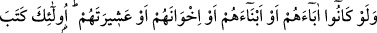

KURTULUŞA ERECEKLER
ALLAH’IN TARAFINDA
OLANLARDIR
22. Allah’a ve âhiret gününe inanan bir toplumun -babaları, oğulları, kardeşleri,
yahut akrabaları da olsa- Allah’a ve Rasûlü’ne düşman olanlarla dostluk ettiğini
göremezsin. İşte onların kalbine Allah, îman yazmış ve katından bir ruh ile onları
desteklemiştir. Onları içlerinden ırmaklar akan cennetlere sokacak, orada ebedî
kalacaklardır. Allah onlardan râzı olmuş, onlar da Allah’tan hoşnut olmuşlardır. İşte
onlar, Allah’ın tarafında olanlardır. İyi bilin ki, kurtuluşa erecekler de sadece
Allah’ın tarafında olanlardır.
“Allah’a ve âhiret gününe inanan bir toplum…” Buradaki hitap, Peygamberimiz
(s.a.)’e veya her hangi bir insanadır. “Tecidü” fiili iki meful almaktadır. Birincisi
kavmen, ikincisi bundan sonra gelen “Babaları, oğulları, kardeşleri, yahut akrabaları da
olsa Allah’a ve Rasûlü’ne düşman olanlarla dostluk ettiğini göremezsin” cümlesidir.
“Yüvaddûne” fiili müfâale ölçüsünde muhabbet anlamındaki meveddet kökünden
alınmıştır. Mevedde/sevgi önce kalpte doğan, eseri ve izleri kalıpta; yâni bedende
ortaya çıkan bir durumdur.
Allah’a ve Rasûlü’ne düşman olanlar, münâfıklar, yahûdiler, fâsıklar, zâlimler ve
bidatçılardır. “Dostluk ettiğini göremez, bulamazsın” demekten maksad, aslında
yapılması imkânsız değilken “bu dostluğun gerçekleşmemesi gerekir” demektir.
Şöyle demek de mümkündür: “Allah ve âhiret gününe tam bir îman ile inanan bir
toplumun -babaları, oğulları, kardeşleri yahut akrabaları da olsa- Allah’a ve
Rasülü’ne düşman olanlarla dostluk ettiğini göremezsin.” Yâni onlar gerçek mümin
değillerdir, demektir.
Keşfü’l-esrar’da şöyle denilmiştir: İman küfürle bozulduğu gibi kâfir hükmünde
olanlar da mümin olma şerefini yitirirler.
Sehl b. Abdullah Tüsteri (k.s.) şöyle demiştir: Îmânını sağlamlaştırıp tevhid temeline